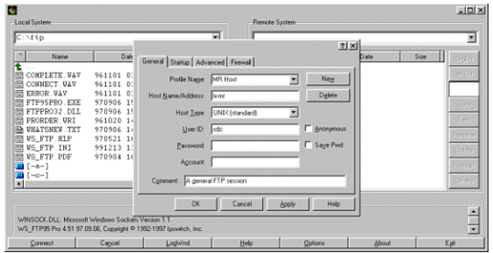

Illustration 9: INITIAL STARTUP OF THE FTP TOOL

Use of this tool as configured assumes the PC's host file has been updated with the host IP address. Refer to PC Configuration, Step 5 of this document for updating the host file if needed.